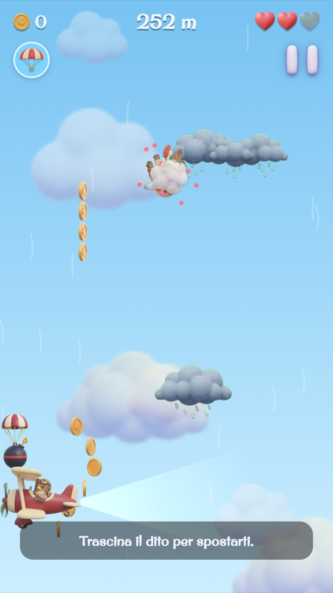
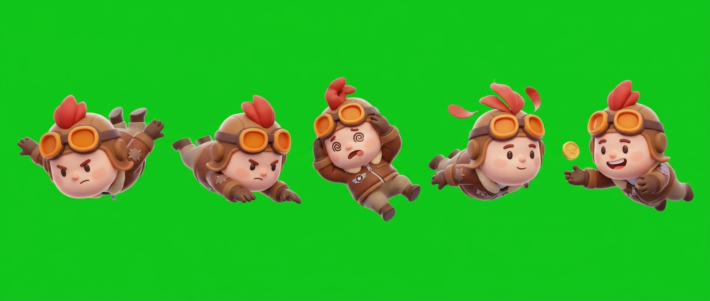
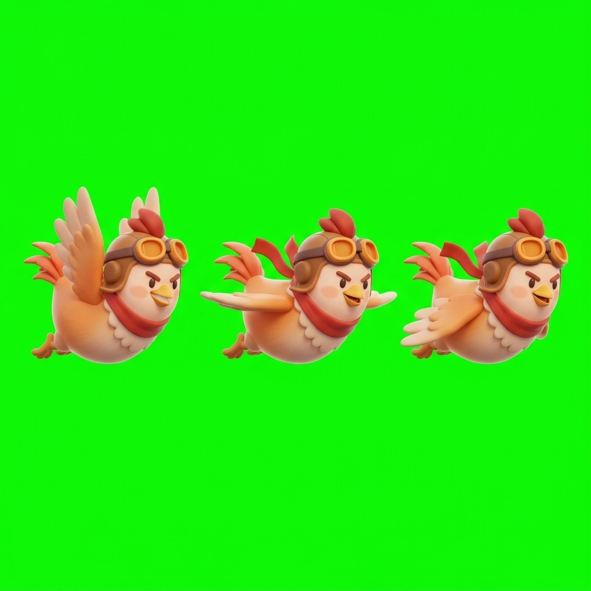
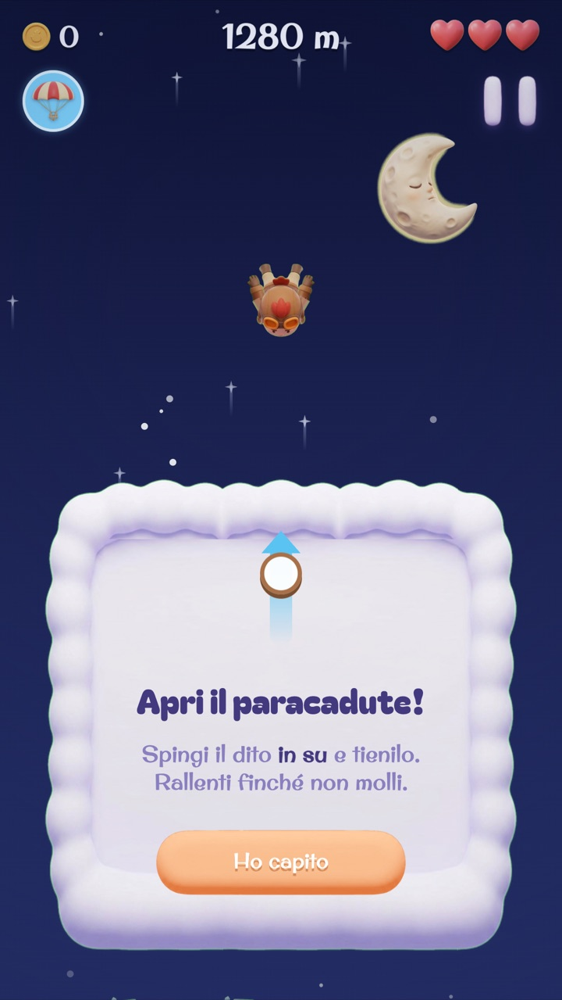

Work/Personal
In development
Chickens don't fly
A small mobile game, to explore how to work with AI. Graphics, interface and characters generated with Gemini, code written by Claude.
Try it
The game runs right here, inside the phone. Drag to move, push up and hold to open the parachute.
With sound · made for phones
Open full screen ↗The idea
Chickens don't fly is first of all an exploration: a game small enough to finish, to find out how far you can get working with AI on graphic elements, interface and character design.
Characters, enemies, obstacles, icons and interface elements are generated with Gemini. The code is written by Claude, following my directions. I decide the direction, the style and what to keep, and I play the game at every step.
How it plays
An aviator chicken falls into the void and can't fly. The goal is to get as far down as possible.
- You drag your finger to dodge obstacles and animals and collect coins.
- Push up and hold to open the parachute and slow down.
- Coins buy power-ups; challenges give gems.
- As you fall you cross five worlds: Sky, Sunset, Night, Cave and Abyss.



Characters
The main character came out of a series of tries with Gemini. Once I had picked him, I had a T-pose generated to attach as a reference to every following prompt, so poses, animals and objects stay in the same soft 3D style.
Each element is generated on its own on a solid green background, then cut out and put into the game.




Interface
I designed the menu myself in Figma. From there Gemini generated icons, buttons and panels; the ones that had to stretch without distorting I had rebuilt in code, so they follow the screen size.
I tried two styles, leather and cloud: you can switch them in the game settings. Shown here: cloud.


